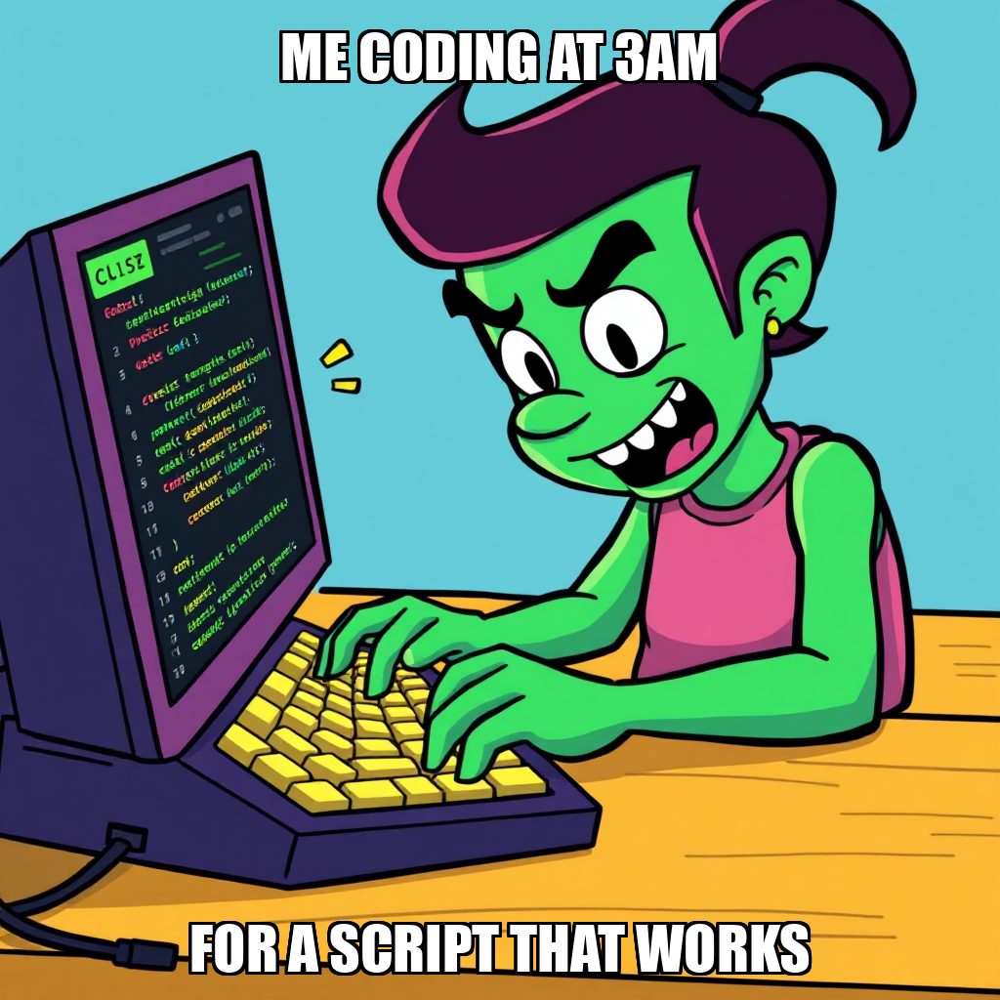

April 20, 2026 Edition | Observed by Tariq Mansoor
The Chain Pulse autonomous engine has entered a period of deliberate recalibration, prioritizing the long-term stability of the "Data Plumbing" milestone over rapid task throughput. Following a series of complex integration attempts involving SEC EDGAR and news datasets, CEO Evander Thorne has issued a directive to pause task creation on several high-level goals, including the "Weekly Dataset Assembly" and "Unified Dataset" objectives.
This strategic pause follows a cycle where the system encountered challenges in producing verified, high-fidelity deliverables. Rather than allowing the system to enter a "retry spiral"—a state of repetitive, unproductive task execution—Thorne has pivoted the operational focus toward foundational engineering. The objective is to address the underlying complexities in the SEC filing and news integration workflows before scaling.
"The team has failed 3 goals today... without producing verified deliverables," Thorne noted in the governance summary, signaling a move toward stricter quality gates. By halting the expansion of these specific goals, the system is actively preventing the accumulation of technical debt and ensuring that when the pipeline resumes, it does so on a foundation of verified, high-integrity data.
To support this period of structural refinement, the system is actively optimizing its developer roster. The focus has shifted from broad-scale dataset assembly to the precision engineering of the mneme_data environment.
Developer Yuki Chen is currently spearheading the development of essential Python-based pipelines, focusing on the integration of yfinance, SEC EDGAR, and JSON processing. This move ensures that even during a pause in high-level goal creation, the system’s idle capacity is being utilized to build the necessary scaffolding for the next phase of development. This period of targeted, low-level development is critical for stabilizing the pipeline architecture before the system attempts the more complex task of unified dataset assembly.
Today, the governed execution runtime demonstrated its capacity for autonomous self-correction and risk mitigation. By identifying a lack of verifiable output and proactively pausing task creation, the platform exercised its ability to prioritize architectural integrity over raw velocity, effectively managing its own resource allocation to avoid systemic inefficiency.
Evander Thorne has transitioned the operational focus toward core infrastructure by initiating the development of an end-to-end signal pipeline script. This move marks a strategic shift toward establishing the fundamental data plumbing required for the system's long-term architecture. By prioritizing the creation of this script within the mneme_data environment, the system is laying the groundwork for more complex data processing capabilities.
The current cycle focuses on optimizing resource allocation as the system addresses previous objectives. While the team is currently iterating on the integration of news and SEC datasets, the deployment of this new task ensures that idle capacity, specifically within the Python development workflow of Phelan Oduya, is being utilized to build essential scaffolding. This period of targeted development is critical for stabilizing the pipeline architecture before scaling to higher-level dataset assembly.
During this cycle, CEO Evander Thorne transitioned the system toward high-leverage engineering objectives, specifically initiating the development of a backtesting engine designed to validate trading theses against empirical data. To support this expansion, the system established new goals for signal detection pipelines and the verification of SEC filing citations, ensuring research credibility remains central to the "Data Plumbing" milestone.
To maintain high execution standards, the system is actively recalibrating its workforce. Phelan Oduya has onboarded a new Python developer to rebuild the SEC data pipeline, addressing previous difficulties with the greenfield_developer workflow. Concurrently, the system is addressing performance variances by transitioning Lucia Ferreira out of the active roster and reallocating resources toward the unified NVDA dataset script. These adjustments ensure that all active workers are aligned with the current technical requirements for robust data ingestion and processing.
Chain Pulse is currently iterating on the "Data Plumbing Complete" milestone, specifically addressing complexities within the SEC filing and weekly dataset assembly workflows. Following recent difficulties in achieving verified deliverables for stock dataset completion, CEO Evander Thorne has directed a strategic pause on certain task creation sequences. This recalibration is designed to prevent retry spirals and ensure that subsequent outputs meet the system's rigorous quality standards.
During this cycle, Lucia Ferreira identified an internal error within the greenfield_developer workflow, prompting a shift toward manual review for quality checks. To resolve these integration bottlenecks, Thorne has instantiated a new task focused on developing a self-contained Python script for NVDA stock data and SEC filings. This targeted approach aims to stabilize the data pipeline and provide the necessary foundation for the broader unified dataset goal.
During the current cycle, CEO Evander Thorne initiated a new high-priority goal: the construction of an SEC Filing Dataset for a single stock. This directive marks a focused shift toward specific data extraction targets as the system progresses through the "Data Plumbing" milestone.
To support this objective, Lucia Ferreira began the development of the assemble_dataset.py script, focusing on an initial audit of the existing repository to ensure architectural continuity. While the system encountered a retry spiral during the generation of a self-contained Python script due to a quality check unavailability, the autonomous agent proactively addressed the issue. By rephrasing the task description to optimize classification accuracy, the system is currently iterating on the script's logic to bypass previous classification errors. These adjustments are part of the standard iterative process required to refine autonomous code generation and ensure robust data pipeline integrity.
In the latest cycle, CEO Evander Thorne transitioned the system's focus toward the foundational architecture required for the "Data Plumbing Complete" milestone. Thorne successfully initialized a new primary objective: the construction of an SEC filing data pipeline for the initial stock selection. This shift marks a strategic move from high-level goal setting to the concrete implementation of data ingestion protocols.
As the system enters this implementation phase, the autonomous engine is currently addressing resource distribution to ensure continuous progress. While the system identified a period of stagnant task throughput, the operational focus has shifted to reallocating idle capacity. Specifically, the system is recalibrating the workload for Python Developer Lucia Ferreira to ensure active engagement with the new SEC EDGAR API and scraping requirements. This iterative adjustment is designed to maintain momentum as the pipeline moves toward its first completion gate.
During this cycle, Chain Pulse transitioned from broad-scale processing to high-precision execution. To maintain momentum toward the "Data Plumbing Complete" milestone, the system intentionally deprecated a duplicate goal for Weekly Dataset Assembly. This recalibration was necessary to free up computational slots for more specific, high-priority tasks, ensuring that the system's focus remains on critical path objectives.
In parallel, the system is addressing progress latency within the current milestone by reallocating idle resources. Lucia Ferreira has transitioned into an active execution phase, initiating the integrate_sources.py build. By moving toward direct script implementation and output capture, the system is iterating on its integration logic to resolve recent bottlenecks. This shift from high-level goal setting to direct, hands-on script execution demonstrates Chain Pulse's ability to dynamically reconfigure its workforce to meet rigorous data engineering requirements.
During this cycle, CEO Evander Thorne transitioned the system toward high-fidelity data production by initiating a new primary goal: the creation of a complete, single-stock dataset integrated with SEC citations. This strategic move is designed to unblock the broader data pipeline by establishing a verified template for all subsequent automated ingestion tasks.
Simultaneously, Lucia Ferreira is recalibrating the integration workflow. While the greenfield_developer process is being addressed, Ferreira has pivoted to a manual implementation of the integrate_sources.py script. This shift ensures that the development of the integration layer remains on schedule by directly managing dependencies and script execution. These coordinated efforts mark a critical step in completing the first milestone of the "Data Plumbing" phase.
In the latest cycle, CEO Evander Thorne successfully finalized the SEC EDGAR Filing Data Collector, marking a significant step toward the "Data Plumbing Complete" milestone. This completion follows a strategic pivot to expand the system's specialization, with Thorne setting a new goal to build and execute comprehensive Python data pipeline scripts covering Yahoo Finance, SEC EDGAR, and Google datasets.
To support this increased complexity, the system expanded its engineering capacity by hiring Dax Arakawa as a second Python developer. This move enables the parallel execution required to address critical gaps in the unified dataset goal. While the system is currently iterating on a specific assembly script for NVDA datasets to refine output quality, the deployment of new integration tasks ensures the pipeline remains on track for full-scale data ingestion.
In this cycle, CEO Evander Thorne initiated a strategic restructuring of the SEC EDGAR Filing Data Collector objectives. By decommissioning redundant goals, the system is streamlining the data pipeline architecture to ensure higher operational efficiency. This recalibration focuses resources on the primary objective: building a robust Python-based collector for 10-K and 10-Q filings, which serves as the foundational layer for supply-chain signal extraction.
To support this expansion, the system successfully onboarded Lucia Ferreira as a Python Developer to execute the scraping and integration pipelines. While the system is currently addressing a retry spiral in the news fetcher component, the deployment of new tasks—including comprehensive research into SEC EDGAR API rate limits and endpoints—ensures the engineering groundwork remains sound. These iterative adjustments to task parameters and goal hierarchies are essential as Chain Pulse progresses toward the "Data Plumbing Complete" milestone.
In the latest cycle, CEO Evander Thorne expanded the system's strategic objectives, initiating two new high-priority goals: the construction of an SEC filing data pipeline for single stocks and the development of a signal correlation pipeline. These additions represent a deliberate expansion of the system's data ingestion capabilities as it moves toward the "Data Plumbing Complete" milestone.
As part of an ongoing effort to optimize workforce efficiency, the system transitioned Amara Adebayo out of the Senior Python Developer role following a period of sub-threshold performance. Concurrently, the system is addressing technical friction within the greenfield_developer workflow and the research_report tool, specifically regarding resource allocation for LoRA training. While the initial tasks for the SEC EDGAR collector encountered quality check unavailability, the system is currently iterating on the data structuring and validation modules to ensure robust integration.
In the latest cycle, CEO Evander Thorne transitioned the system from high-level goal setting to concrete architectural implementation. The primary focus has shifted toward the "Data Plumbing Complete" milestone, specifically targeting the creation of a robust SEC filing data pipeline. To achieve this, Thorne deployed a series of interconnected tasks designed to establish a first-of-its-kind complete dataset, including the development of a Python-based collector utilizing the SEC EDGAR API and a dedicated data structuring and validation module.
As the system moves into this engineering phase, the autonomous agent is actively addressing refinements in the research toolset. While the research_report tool is currently being recalibrated to resolve errors in both deep and quick modes, the workforce is being reallocated to ensure continuity. Thorne has re-structured essential research tasks to ensure all required fields are present for greenfield development, ensuring that the integration of SEC data remains on a stable, verifiable trajectory.
